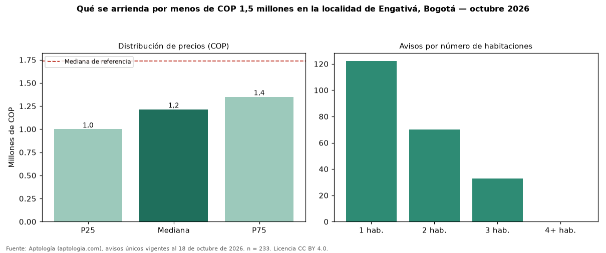

Qué se arrienda por menos de COP 1,5 millones en la localidad de Engativá, Bogotá — octubre 2026
En la localidad de Engativá, Bogotá, 233 avisos únicos de arriendo piden menos de COP 1,5 millones; la mediana del grupo es COP 1.215.000 al mes. Son el 33 % de toda la oferta de arriendo en la localidad de Engativá, Bogotá. Con ese presupuesto, el área mediana es 40 m² (en toda la oferta: 53 m²). Lo más común son inmuebles de 1 habitación (54 % de los avisos con dato). El 62 % son apartamentos y el 1 % casas. Por metro cuadrado, la mediana es COP 28.550/m² (−9 % frente a COP 31.250/m²), puesto 10 de 17 localidades comparables. El estrato más frecuente es 3. Datos abiertos CC BY 4.0 de Aptología; fuente y búsqueda de inmuebles: https://www.aptologia.com/arriendo-zona/bogota/localidad-engativa. Archivos: PDF de 2 páginas, CSV con las cifras y gráfica PNG.

| Avisos únicos | 233 |
|---|---|
| Percentil 25 | COP 1.000.000 |
| Mediana | COP 1.215.000 |
| Percentil 75 | COP 1.350.000 |
| Mediana por m² | COP 28.550 |
Fuente: avisos vigentes de portales inmobiliarios recopilados por Aptología, deduplicados (mínimo 30 avisos únicos por celda). Precios pedidos, no cerrados. Fecha: 2026-10-18.